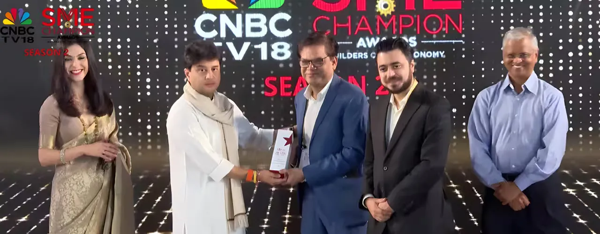

New Delhi, July 25: CS TECH Ai has been conferred the ‘Excellence in Community Engagement’ honour at the CNBC-TV18 SME Champion Awards 2025, presented by HSBC. The award was presented by Shri Jyotiraditya Scindia, Hon’ble Union Minister for Communications and Development of Northeastern Region, during a ceremony in New Delhi that recognised India’s most visionary SMEs. Dr. Abhay Kimmatkar (Managing Director) and Tarun Bisht (Vice President – Business Development) were there at the occasion to accept this award.
This award is a culmination of CS TECH Ai’s multi-year journey in reimagining how water is monitored, distributed, and governed in India’s rural regions. The recognition specifically acknowledges its work under the Jal Jeevan Mission (JJM) - where the company’s IoT-enabled water monitoring platform spans 9,000+ villages, covers 10 million+ people, and enables data-driven decision-making across over 300,000 sq. km of rural Maharashtra.
The initiative integrates field-level sensors, central dashboards, and AI-led analytics to provide real-time insights on flow, pressure, and water quality. It has helped transform legacy water systems into transparent, accountable, and responsive utilities. Key outcomes include:
- Increased per capita availability from 40 to 55 LPCD
- Shift from unmonitored to actively managed supply
- Pressure balancing to ensure equitable distribution
- Actionable visibility from villages to state control rooms
A certified AVEVA partner, CS TECH Ai recently presented this initiative at the AVEVA World Conference, further underlining its growing leadership in digital infrastructure for essential services.
From geospatial mapping to IoT and analytics, CS TECH Ai continues to deliver resilient, data-driven solutions that advance equity, governance, and sustainability at scale.